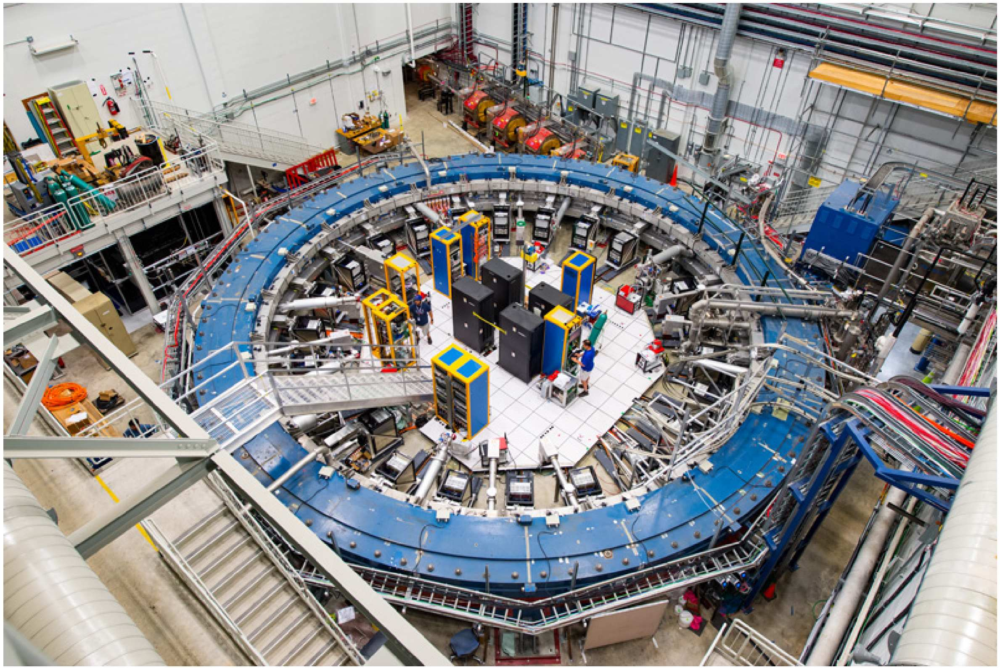

Measurement of electron and muon magnetic moments is one of the most accurate in modern physics. This measurement provides a very precise test for the elementary particles model. In the experiment positively charged muons (also called antimuons) are used. The antimuon mass is approximately 200 times larger than the mass of the electron and the antimuon charge is equal to the absolute value of the electron charge. Throughout the problem we will refer to the positively charged muons as just muons for brevity.
The muon (and the electron) has angular momentum $\vec s$, which is not connected with its motion in space. This angular momentum is called the spin of the muon. Spin motion can be described by the torque equation: the rate of change of the spin moment is equal to the applied torque. Moreover, the muon has magnetic moment
\[\vec\mu = g_\mu\,\frac{q}{2m_\mu}\,\vec s.\]Here $m_\mu$ and $q$ are the mass and charge of the muon, $g_\mu = 2(1+a_\mu)$ is a dimensionless constant. The parameter $a_\mu$ describes the deviation of the magnetic moment from the “normal” value (which corresponds to $g_\mu = 2$). The problem deals with an experiment in which the anomalous contribution to the magnetic moment $a_\mu$ is determined. Muons move in a circle in a homogeneous magnetic field and their magnetic moment precession frequency is measured.

In particle physics energies are usually measured in electronvolts (eV). Instead of the particle mass $m$ the rest energy $mc^2$ is used; its value is also measured in electronvolts. You may use the following numerical values:
Rotation can be described by an angular velocity vector $\vec\omega$, which is directed along the rotation axis; the direction of $\vec\omega$ is determined by the right-hand rule. If a vector $\vec A$ rotates in the laboratory frame of reference with angular velocity $\vec\omega$, its time derivative is
\[\frac{d\vec A}{dt} = \vec\omega\times\vec A.\]Let the reference frame $B$ (coordinates and time are $x', y', z', t'$) move with respect to the laboratory reference frame $A$ (coordinates and time are $x, y, z, t$) with velocity $V$ along the $x$ axis. The coordinates in these frames are related by the Lorentz transformation
\[x = \gamma(x' + Vt'),\quad t = \gamma\left(t' + \frac{V}{c^2}x'\right),\quad y = y',\quad z = z',\quad \gamma = \frac{1}{\sqrt{1 - V^2/c^2}}.\]In all your answers you can use the $\gamma$ defined above to simplify formulas.
If the particle’s velocity in the moving reference frame $B$ is $\vec v^{\,\prime}$, with projections on the coordinate axes $v'_x, v'_y, v'_z$, its velocity components in the laboratory reference frame are
\[v_x = \frac{v'_x + V}{1 + \dfrac{v'_x V}{c^2}},\qquad v_y = \frac{v'_y\sqrt{1 - V^2/c^2}}{1 + \dfrac{v'_x V}{c^2}},\qquad v_z = \frac{v'_z\sqrt{1 - V^2/c^2}}{1 + \dfrac{v'_x V}{c^2}}.\]The energy and momentum of a relativistic particle with mass $m$ moving at speed $\vec v$ are
\[E = \gamma mc^2,\qquad \vec p = \gamma m\vec v,\qquad \gamma = \frac{1}{\sqrt{1 - v^2/c^2}}.\]If the particle moves under the force $\vec F$, the equation of motion is
\[\frac{d\vec p}{dt} = \vec F.\]In questions that require a numerical answer you need to calculate three significant figures.
During the anomalous magnetic moment measurement experiment a beam of muons moves in the magnetic field $B = 1.450\ \mathrm{T}$; the muons’ momenta are perpendicular to the magnetic field and equal to $pc = 3.094\ \mathrm{GeV}$. The magnetic field is directed along the $z$ axis.
Now we consider the case when the muon is at rest in the same magnetic field $B$ as in the previous parts.
The muon spin is not related to its spatial motion and should be described in the frame of reference in which the muon is at rest (such a frame is called the comoving frame). If the muon is moving with acceleration, at each instant of time we must choose a different comoving frame of reference. Consider two successive Lorentz transformations. The first transformation is from the laboratory frame $A$ (coordinates $x, y, t$) to the moving frame $B$ (coordinates $x', y', t'$). The second is from the reference frame $B$ to the third reference frame $C$ (coordinates $x'', y'', t''$). It turns out that the combination of these transformations is not a Lorentz transformation with some resulting velocity. There is an additional rotation which leads to the spin precession. This effect is called Thomas precession. Thomas precession is a purely kinematic phenomenon, so to describe it we do not have to consider the magnetic moment dynamics.
Let the reference frame $B$ move with velocity $v_x$ along the $x$ axis with respect to $A$. In turn the reference frame $C$ moves with velocity $v'_y$ along the $y$ axis with respect to $B$. You may assume that $v'_y \ll v_x$ and work up to the first order in $v'_y$. To simplify your expressions you may use the notation $\gamma = 1/\sqrt{1 - v_x^2/c^2}$.
Let us consider a muon moving in a homogeneous magnetic field. Muon spin precession is determined by two factors: direct interaction with the magnetic field and Thomas precession due to the accelerated motion. The angular velocity of precession due to the magnetic field can be calculated by the formula obtained in question A6 in the case of the muon at rest. From now on we assume everywhere that the muon spin is parallel to the plane of the muon motion.